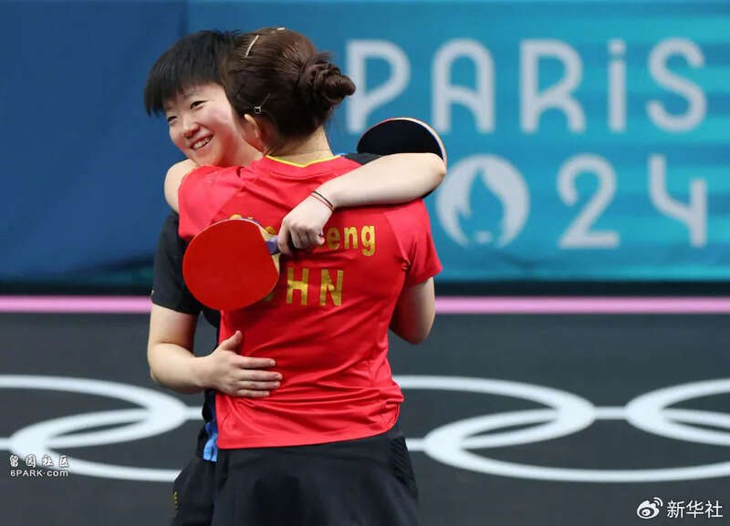

8月3日晚，巴黎奥运会迎来乒乓球女子单打决赛。由于孙颖莎和陈梦提前锁定金银牌，中国选手顶峰相见，本该是一场可以尽情享受的视觉盛宴，可谁也没想到，观众席的喝彩带有明显倾向性，很多收看比赛的观众感到不妥、不适乃至气愤，认为这是把饭圈习气带到了看台。
从现场转播可以看到，比赛过程中，大量粉丝举着“孙颖莎加油”等牌子为喜欢的球星呐喊助威。喜欢孙颖莎原本值得鼓励，但让人不能理解的是，为孙颖莎加油的声音震天动地，为陈梦加油的声量则小了很多，乃至陈梦失误时竟有人叫好，陈梦得分时竟有人喝倒彩。同样是为国而战，为何如此厚此薄彼？场上比赛公平精彩，看台上岂能发出不公正的杂音？

陈梦和孙颖莎赛后拥抱。图源：@新华社
看台上一边倒的“喝彩”，与体育精神格格不入。在竞技体育中，每位运动员都有其独特魅力，观众喜欢谁都很正常。一场比赛，选手和观众算得上互相成就。有人欣赏的比赛能给运动员带来更大动力，而运动员赛场竞技可以让观众充分感受体育的巨大魅力。在奥运会这样的顶级赛场上，运动员的一举一动更是牵动亿万网友，观众无不为他们绷紧神经。就在比赛扣人心弦之时，部分现场观众饭圈式的疯狂应援，既影响屏幕前亿万观众沉浸式的观赛体验，也是对庄严体育精神的亵渎。
看台上一边倒的“喝彩”，也是对运动员的不尊重。孙颖莎和陈梦在各自半区一路披荆斩棘，战胜众多好手，才能实现决赛会师，确保金牌不失。她们既是在为自己而战，更是在为国家而战。可那一声声非理性的叫喊，俨然把比赛现场变成了追星的天地。在他们眼里，似乎只剩下自己的“偶像”，难道国家的荣耀无足轻重？饭圈式的加油，不仅对另一方选手造成干扰，其实也无助于“爱豆”的临场发挥。往小了说是扰乱赛场秩序，影响运动员的状态，往大了说就是无视公平竞赛的体育规则，根本不是热爱运动员的正确方式。
令人担忧的是，饭圈之风正在体育赛场愈演愈烈。跳水运动员全红婵的粉丝曾经怒斥裁判压分，中国职业台球选手潘晓婷曾被粉丝跟踪骚扰。乒乓球运动更是饭圈文化的重灾区，樊振东曾因身份证号被恶意传播发文维权，王楚钦曾恳求粉丝不要再蹲点跟拍。巴黎奥运会上，乒乓球运动员依旧受到饭圈文化的侵扰。王楚钦输球之后，部分球迷竟然拉踩另外的运动员，简直匪夷所思。因为是偶像，所以得完美，赢了就是自家的球星最棒，输了就是对方有问题，敢问这样的粉丝有几分真心爱护运动员？饭圈风刮进奥运会这样的体育盛事，更加令人忧心。
体育运动员这颗“星”不是不能追，关键是怎么追。要追的是他们日复一日的坚持，敢打敢拼的意志，为国争光的精神。前不久，国家体育总局明确表示，体育不应该、也不允许成为畸形“饭圈文化”继续滋生的“引线”和“温床”，全国体育系统将全过程坚决抵制畸形“饭圈文化”对体育领域的侵蚀。事关运动员的身心健康、运动队为国争光的能力、国家体育运动事业的发展，去除体育饭圈化，刻不容缓。这是对运动员最好的保护，也是对清朗体育空间的优化。
奥运会还在继续，运动健儿们正在赛场上挥洒汗水。所有为国争光的运动员都值得我们送上最热烈的掌声、最响亮的喝彩，至于那些不和谐的饭圈杂音，该从看台内外清出去。